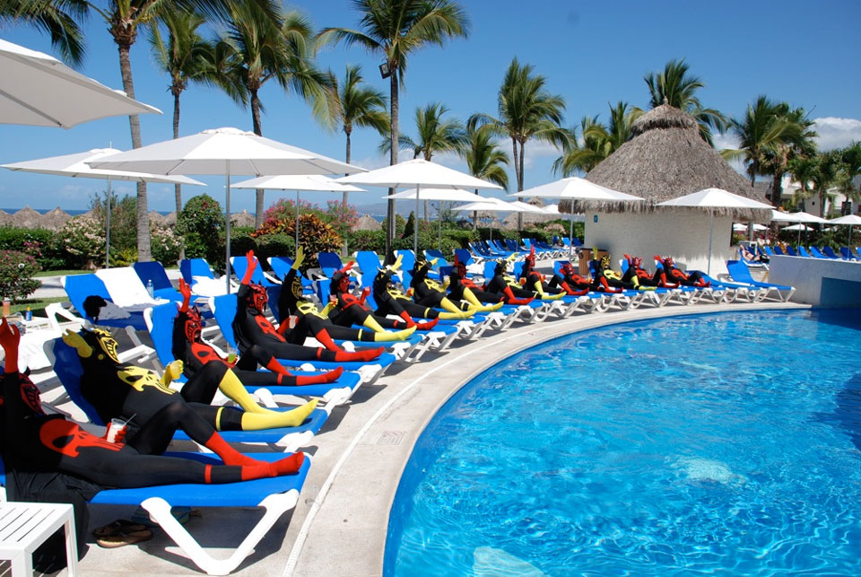
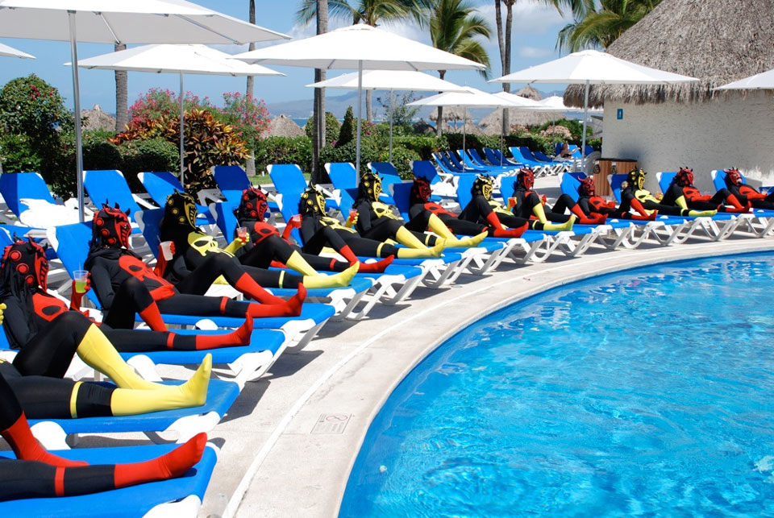
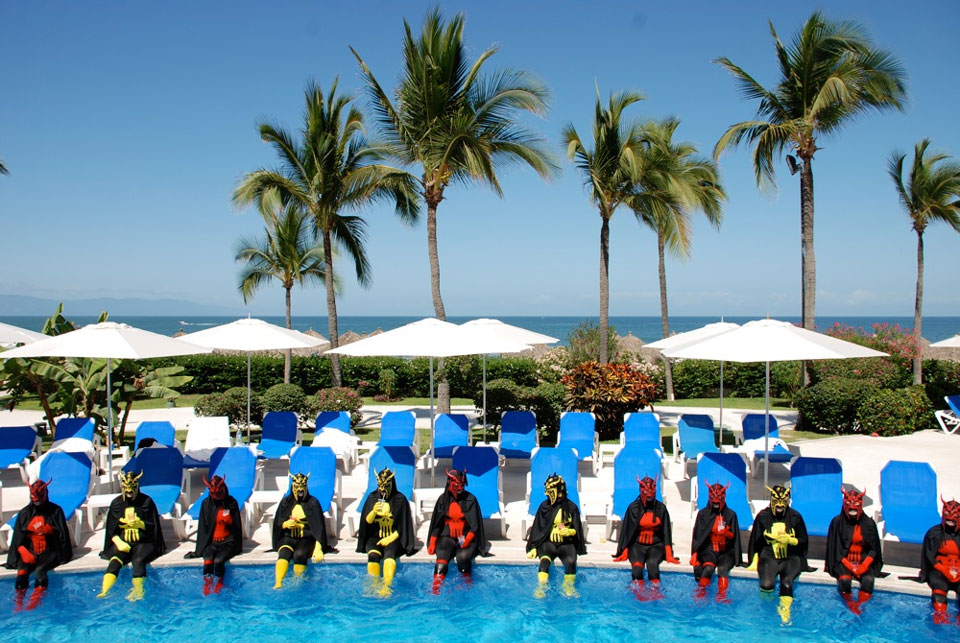
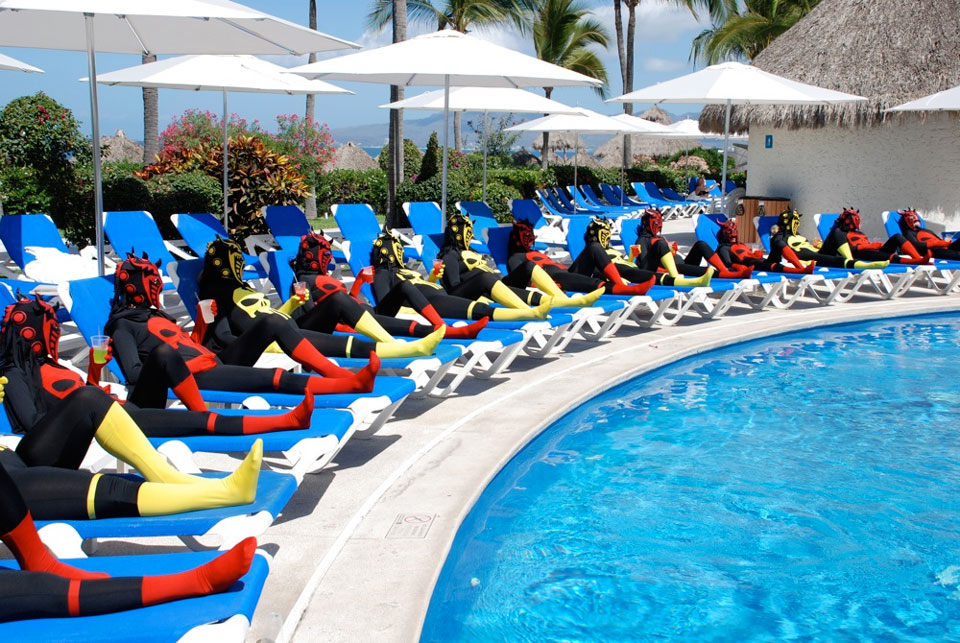
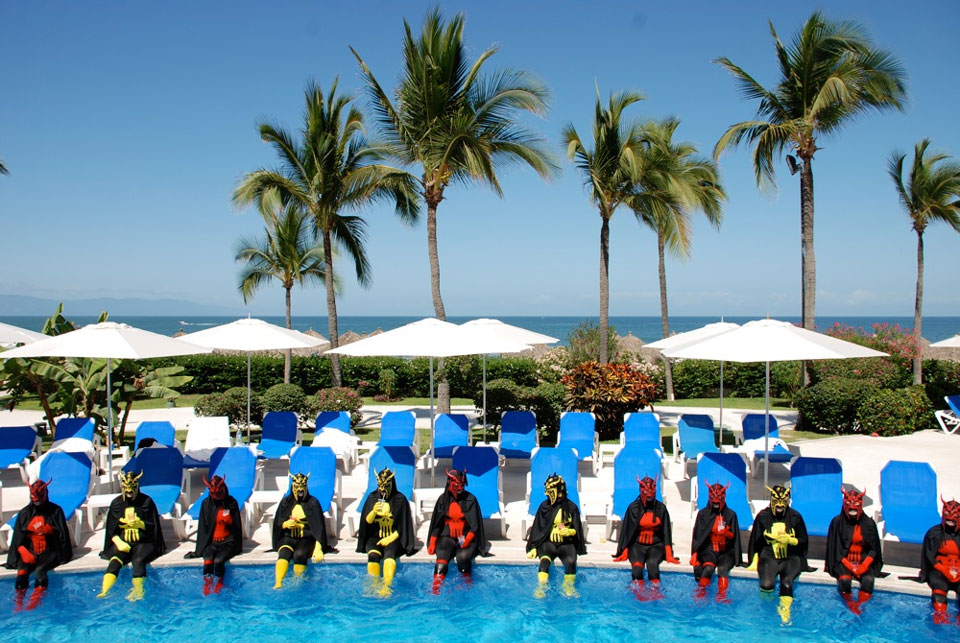
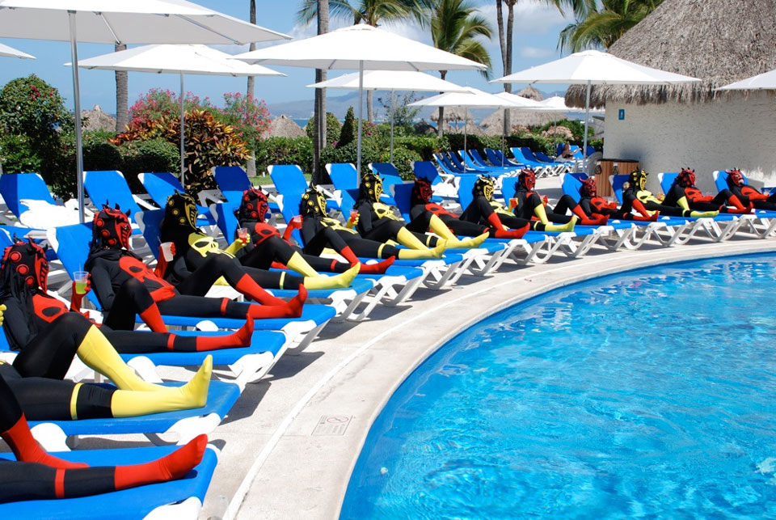
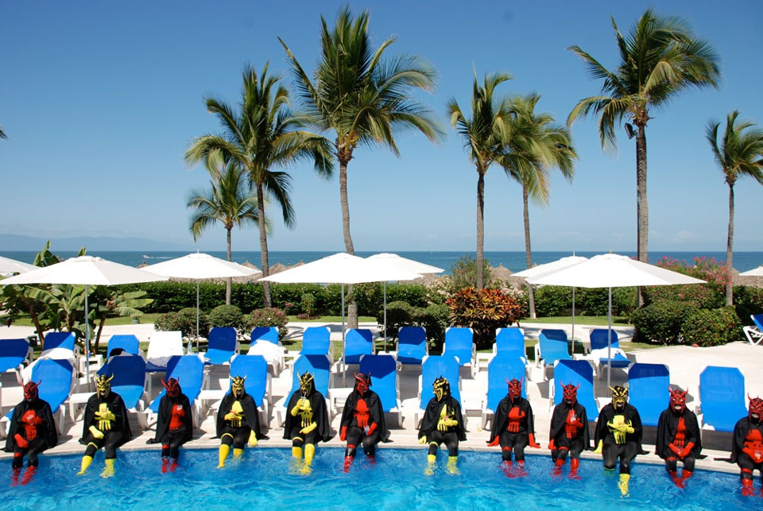

Special Episode: Mexico
In April 2010 an opportunity arose for Kitty when CCP Games took the entire staff of their Reykjavík, Atlanta and Shanghai offices abroad to Puerto Vallarta, Mexico. Eight members of staff had already taken part in one or more Episodes of the Project and so Kitty decided to open the opportunity of producing an episode to the female staff of CCP whilst in Mexico.
This 'special' followed the restrictions of a normal Weird Girls Project Episode in as much as the girls did not know what their costumes would be or what they would be doing until the moment, but it was produced on 2 separate days and with approximately a quarter of the usual time spent on an Episode.
- Producer, Concept and Artistic Direction: Kitty Von-Sometime
- Technical Director, Editing and Post Production: Arnar Valdimarsson
- Official Photographers: Ben Mathis and James Wyld
- Costumes: Judy Wu
- Official Music: Par Avion by FM Belfast
- 30th April and 2nd May 2010

 





